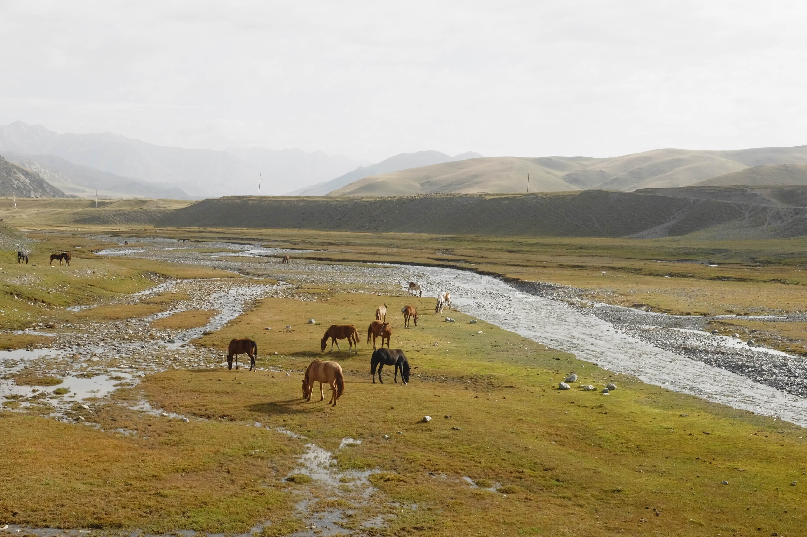

Up to Kel-Suu
posted on 1 October, 2023 by Dan Vonk in personal, travel
A view of Kel-Suu
The drive up to Kel-Suu was an unforgettable experience.
tien shan
ss
fff
content
horses drinking

content
Kel-Suu
posted on 1 October, 2023 by Dan Vonk in personal, travel
The drive up to Kel-Suu was an unforgettable experience.
ss
fff
content
content